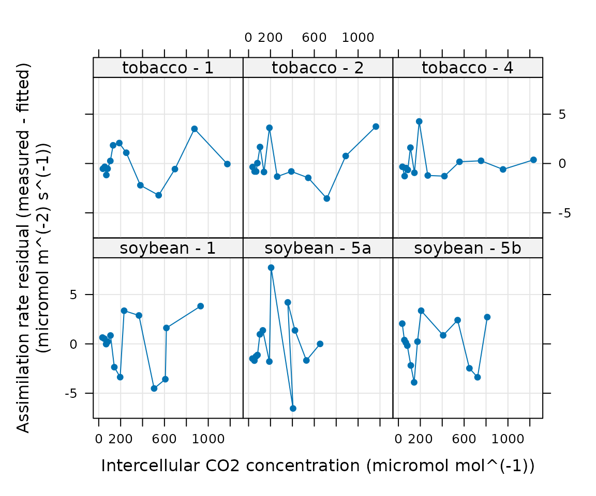

Overview
PhotoGEA (short for photosynthetic gas exchange analysis) is an R package that provides a suite of tools for loading, processing, and analyzing photosynthetic gas exchange data.
Installing PhotoGEA
The easiest way to install PhotoGEA is to type the
following from within the R terminal:
remotes::install_github('eloch216/PhotoGEA')Note that this method requires the remotes package,
which can be installed from within R by typing
install.packages('remotes').
An Example: C3 CO2 Response Curves
As an example, we will read data from two Licor Li-6800 log files
that contain several A-Ci curves measured from tobacco and soybean
plants, fit a model to each response curve, and then plot some of the
results. This is a basic example that just scratches the surface of what
is possible with PhotoGEA.
(Note: When loading your own files for analysis, it
is not advisable to use PhotoGEA_example_file_path as we
have done in the code below. Instead, file paths can be directly
written, or files can be chosen using an interactive window. See the Analyzing C3 A-Ci
Curves vignette for more information.)
Fitting the Curves
The following code can be used to read the data and fit each curve:
# Load required packages
library(PhotoGEA)
library(lattice)
# Define a vector of paths to the files we wish to load; in this case, we are
# loading example files included with the PhotoGEA package
file_paths <- c(
PhotoGEA_example_file_path('c3_aci_1.xlsx'),
PhotoGEA_example_file_path('c3_aci_2.xlsx')
)
# Load the data from each file
licor_exdf_list <- lapply(file_paths, function(fpath) {
read_gasex_file(fpath, 'time')
})
# Get the names of all columns that are present in all of the Licor files
columns_to_keep <- do.call(identify_common_columns, licor_exdf_list)
# Extract just these columns
licor_exdf_list <- lapply(licor_exdf_list, function(x) {
x[ , columns_to_keep, TRUE]
})
# Combine the data from all the files
licor_data <- do.call(rbind, licor_exdf_list)
# Define a new column that uniquely identifies each curve
licor_data[, 'curve_id'] <-
paste(licor_data[, 'species'], '-', licor_data[, 'plot'] )
# Organize the data
licor_data <- organize_response_curve_data(
licor_data,
'curve_id',
c(9, 10, 16),
'CO2_r_sp'
)
# Specify separate mesophyll conductance values for each species
licor_data <- set_variable(
licor_data, 'gmc', 'mol m^(-2) s^(-1) bar^(-1)',
id_column = 'species',
value_table = list(soybean = 0.9, tobacco = 1.1)
)
# Calculate the total pressure
licor_data <- calculate_total_pressure(licor_data)
# Calculate Cc
licor_data <- apply_gm(licor_data)
# Calculate temperature-dependent values of C3 photosynthetic parameters
licor_data <- calculate_arrhenius(licor_data, c3_arrhenius_bernacchi)
# Fit all curves in the data set
aci_results <- consolidate(by(
licor_data,
licor_data[, 'curve_id'],
fit_c3_aci,
Ca_atmospheric = 420
))When this document was generated, evaluating this code required the following amount of time:
#> user system elapsed
#> 12.549 0.045 12.596The timing results may vary depending on the particular machine used to run the code. Nevertheless, this is a small time investment for an advanced algorithm that uses maximum likeliood fitting and derivative-free optimizers for robust fitting, and calculates confidence intervals to determine which estimated parameter values are reliable.
This example contains 12 commands, so it certainly isn’t short;
however, a close look reveals that much of the commands are general and
would apply to any set of C3 response curves. In
fact, only a few parts would need to be modified, such as the list of
files to read, the curve identifier, and the value of mesophyll
conductance. While using PhotoGEA, you are encouraged to
copy this example and any others to use as the base of your own scripts;
work smarter, not harder!
Viewing the Results
Having fit the response curves, it is also possible to view the fits
and the extracted parameters. For example, we can plot the measured
values of net assimilation (black circles), the fitted values of net
assimilation (An), and each of the limiting assimilation
rates calculated during the fitting procedure: the Rubisco limited rate
(Ac), the RuBP regeneration limited rate (Aj),
and the triose phosphate utilization limited rate (Ap).
plot_c3_aci_fit(aci_results, 'curve_id', 'Ci', ylim = c(-10, 80))
Another way to check the quality of the fits is to plot the residuals, which should be randomly distributed:
xyplot(
A_residuals ~ Ci | curve_id,
data = aci_results$fits$main_data,
type = 'b',
pch = 16,
grid = TRUE,
xlab = paste0('Intercellular CO2 concentration (', aci_results$fits$units$Ci, ')'),
ylab = paste0('Assimilation rate residual (measured - fitted)\n(', aci_results$fits$units$A, ')'),
)
It is also possible to plot one or more of the fitting parameters
averaged across species in a bar chart with error bars; here we plot
values of Vcmax at 25 degrees C.
barchart_with_errorbars(
aci_results$parameters[, 'Vcmax_at_25'],
aci_results$parameters[, 'species'],
xlab = 'Species',
ylab = paste0('Vcmax at 25 degrees C (', aci_results$parameters$units$Vcmax_at_25, ')'),
ylim = c(0, 200)
)Learning More
The PhotoGEA package includes extensive documentation,
and more articles are being added all the time:
-
Developing a Data
Analysis Pipeline: Discusses how
PhotoGEAprovides functionality for all parts of a data analysis pipeline, including loading and validating the data – and how it can help save your time and improve the reproducibility of your data analysis! -
Working With
Extended Data Frames: Discusses how to work with extended data
frames, which are a critical part of
PhotoGEA. - Analysis case studies:
- Analyzing C3 A-Ci Curves (This example is more detailed than the analysis demonstrated here.)
- Analyzing C4 A-Ci Curves
- Analyzing Ball-Berry Data
- Analyzing TDL Data
- Analyzing Mesophyll Conductance Data
- More advanced topics:
-
Creating Your Own
Processing Tools: Discusses how to create functions compatible with
PhotoGEAthat apply new types of processing. -
Combining PhotoGEA With
Other Packages: Discusses how to create wrappers for functions from
other packages to extend the processing capabilities of
PhotoGEA.
-
Creating Your Own
Processing Tools: Discusses how to create functions compatible with